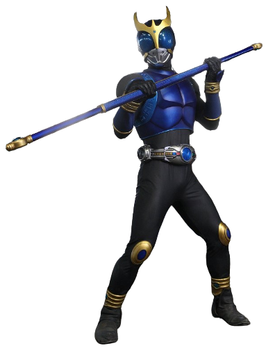
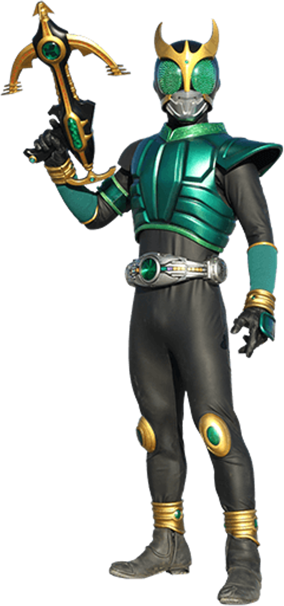
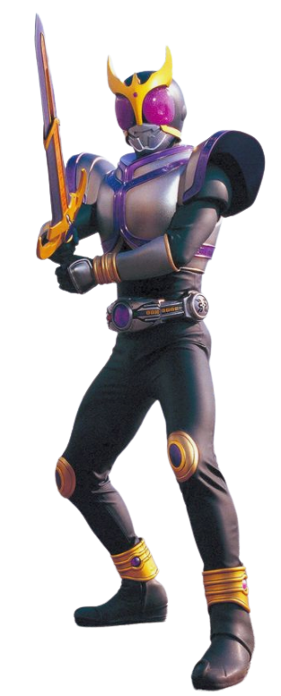
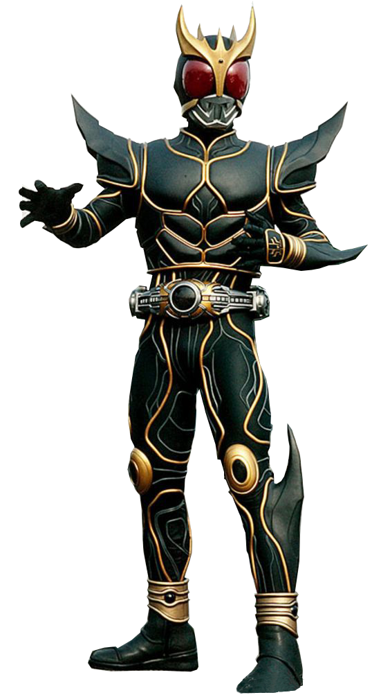

Godai Yusuke the main protagonist of Kamen Rider Kuuga. He is a young man who transforms into Kamen Rider Kuuga
Kamen rider Kuuga has many other forms that helps him in battle.
Kuuga Forms: Each forms are very unique to eachother in many ways.

Mighty form is Kuuga's red main form. It is the most balanced out of all of his standard forms, and is thus his most used form. Unlike his other forms, it has no personal weapon, instead opting for hand-to-hand combat.
Rider Statistics[2]
Rider Height: 200 cm
Rider Weight: 99 kg
Rider Senses[2]
Eyesight: 10 times average human eyesight
Hearing: 10 times average human hearing
Ability Parameters[2]
Punching Power: 3 t
Kicking Power: 10 t
Maximum Jump Height: 15 m
Maximum Running Speed: 100 m per 5.2 seconds

Dragon form is Kuuga's agile blue form. While it is physically weaker than any of his other forms, it is much faster and can leap incredible heights. To make up for its weakness, Dragon Form can transform any pole into the Dragon Rod
Rider Statistics[2]
Rider Height: 200 cm
Rider Weight: 90 kg
Rider Senses[2]
Eyesight: 10 times average human eyesight
Hearing: 10 times average human hearing
Ability Parameters[2]
Punching Power: 1 t
Kicking Power: 3 t
Maximum Jump Height: 30 m
Maximum Running Speed: 100 m per 2 seconds

is Kuuga's green sniper form with massively boosted senses, enabling him to see, hit and hear his opponents with extreme precision. However, this increased sensory stimulation overwhelms Kuuga over time, preventing him from using this form for more than 50 seconds without being forced into Growing Form and made unable to transform again for 2 hours. Pegasus Form can transform any gun-like object into the
Rider Statistics[2]
Rider Height: 200 cm
Rider Weight: 99 kg
Rider Senses[2]
Eyesight: 1000 times average human eyesight
Hearing: 1000 times average human hearing
Ability Parameters[2]
Punching Power: 1 t
Kicking Power: 3 t
Maximum Jump Height: 15 m
Maximum Running Speed: 100 m per 5.2seconds

Titan Form is Kuuga herculean purple form, it sacrifices speed for increased durability and strength. Titan Form's impenetrable defenses allow Kuuga to endure enemy attacks long enough to approach the opponents. He is armed with the Titan Sword
Rider Statistics[2]
Rider Height: 200 cm
Rider Weight: 110 kg
Rider Senses[2]
Eyesight: 10 times average human eyesight
Hearing: 10 times average human hearing
Ability Parameters[2]
Punching Power: 7 t
Kicking Power: 10 t
Maximum Jump Height: 10 m
Maximum Running Speed: 100 m per 7.2 seconds

Kuuga's final form and the combination of all of his forms' power. In this form, Kuuga is also referred to as the Supreme Warrior
Rider Statistics[2]
Rider Height: 200 cm
Rider Weight: 150 kg
Rider Senses[2]
Eyesight: 10 times average human eyesight
Hearing: 10 times average human hearing
Ability Parameters[2]
Punching Power: 80 t
Kicking Power: 100 t
Maximum Jump Height: 90 m
Maximum Running Speed: 100 m per 2 seconds
Ultimate Punch: 80 t
Ultimate Kick: 100 t